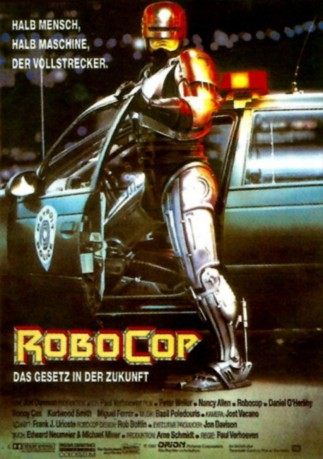
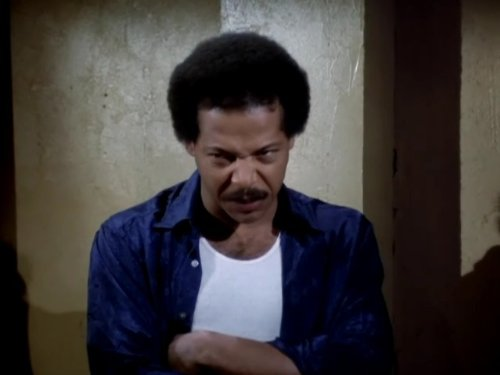
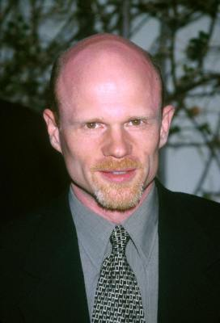
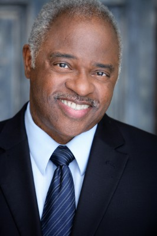
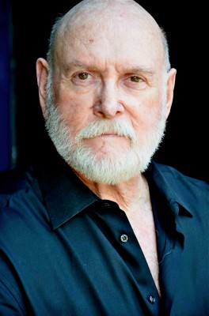

#236 RoboCop 1
Auszeichnungen: 1 Oscars gewonnen für 2 Oscars nominiert
 
 IMDB-Wertung: 7.6 / 10
IMDB-Wertung: 7.6 / 10  Metascore: 67
Metascore: 67 
Detroit in naher Zukunft. Die Kriminalitätsrate ist drastisch angestiegen. Eine Lösung bietet das RoboCop-Programm der Firma Omni, die auch die Polizei übernommen hat. Als der Polizist Murphy von Bandenchef Clarence und seinen Männern zusammengeschossen wird, verwandelt man den Körper des Toten in eine stählerne, hochgerüstete Law & Order-Maschine. Obwohl perfekt programmiert, ist seine Erinnerung nicht vollständig ausgelöscht worden. Murphy macht sich auf die Suche nach seinen Mördern und entdeckt, daß der Drahtzieher hinter Clarance' Verbrechen, Jones, in der Chefetage von Omni sitzt. Nachdem Murphy Clarence ausgeschaltet hat, kann er auch Jones töten.
Jahr: 1987
Dauer: 102 Minuten
FSK: 16
Land: USA Studio: Orion PicturesTonspuren: DTS - ,
Untertitel: Deutsch,
Auflösung: 1080p (1920×1080) Größe: 10547 MB
Genre: Action, Krimi, Sci-Fi, Thriller
Regisseur:  Paul Verhoeven
Paul Verhoeven
Drehbuch: Edward Neumeier, Michael Miner
Soundtrack: Basil Poledouris
Darsteller:
 Peter Weller als Officer Alex J. Murphy / RoboCop
Peter Weller als Officer Alex J. Murphy / RoboCop Nancy Allen als Officer Anne Lewis
Nancy Allen als Officer Anne Lewis Dan O'Herlihy als The Old Man
Dan O'Herlihy als The Old Man Ronny Cox als Dick Jones
Ronny Cox als Dick Jones Kurtwood Smith als Clarence J. Boddicker
Kurtwood Smith als Clarence J. Boddicker Miguel Ferrer als Bob Morton
Miguel Ferrer als Bob Morton Robert DoQui als Sergeant Warren Reed
Robert DoQui als Sergeant Warren Reed Ray Wise als Leon C. Nash
Ray Wise als Leon C. Nash-  Felton Perry als Johnson
-  Paul McCrane als Emil M. Antonowsky
-  Jesse D. Goins als Joe P. Cox
- Del Zamora als Kaplan
-  Lee de Broux als Sal
- Edward Edwards als Manson
 Michael Gregory als Lieutenant Hedgecock
Michael Gregory als Lieutenant Hedgecock- Gene Wolande als Prisoner
 Charles Carroll als Bail Bondsman
Charles Carroll als Bail Bondsman- Kevin Page als Kinney
- Yolonda Williams als Ramirez
- Tyrees Allen als Starkweather
- John S. Davies als Chessman
 Darryl Cox als Technician #2
Darryl Cox als Technician #2- Jerry Haynes als Dr. McNamara
 William Shockley als Creep
William Shockley als Creep Mike Moroff als Hophead
Mike Moroff als Hophead Diane Robin als Chandra
Diane Robin als Chandra- Angie Bolling als Ellen Murphy
 Bill Farmer als Justin Ballard-Watkins
Bill Farmer als Justin Ballard-Watkins- Leeza Gibbons als Jesse Perkins
 Mario Machado als Casey Wong
Mario Machado als Casey Wong Gilbert B. Combs als Sal's Gunman , uncredited
Gilbert B. Combs als Sal's Gunman , uncredited Allan Graf als Sal's Bodyguard , uncredited
Allan Graf als Sal's Bodyguard , uncredited- Katie Griffin als Young Girl , uncredited
- Harry Johnson als Dad - Nuke-'em' Commercial , uncredited
- Edward Neumeier als Edward Neumeier - Man on the Wanted Bulletin in Police Deaprtment , uncredited
- Randall Oliver als S.W.A.T. Team Member , uncredited
- Scott Sligar als S.W.A.T. Team Member , uncredited
- Paul Verhoeven als Dancer at Disco , uncredited
- Calvin Jung als Steve Minh
- Rick Lieberman als Walker
- Mark Carlton als Ron Miller
- Freddie Hice als Bobby
- Neil Summers als Dougy
- Gregory Poudevigne als Slimey Lawyer
- Laird Stuart als Cecil the Clerk
- Stephen Berrier als Roosevelt
- Sage Parker als Tyler
- Karen Radcliffe als Technician #1
- Donna Keegan als Rape Victim
- Marjorie Rynearson als Grocery Mom
Datei: X:\4-Tetralogie(M-Z)\RoboCop\RoboCop 1 (1987, FSK16, 1920x1080).mkv seit 15.02.2015
Festplatte: HD Collection-3(N-Z)-6(A-Z)
 Es gibt insgesamt 7 Filme in der Gruppe '4-Tetralogie(M-Z)\RoboCop'
Es gibt insgesamt 7 Filme in der Gruppe '4-Tetralogie(M-Z)\RoboCop'